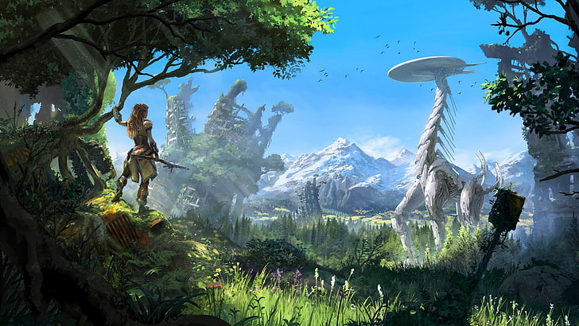

Horizon Zero Dawn is a 2017 action role-playing game developed by Guerrilla Games and published by Sony Interactive Entertainment. The game was released for PlayStation 4 in 2017 and Windows in 2020.
Horizon Zero Dawn is the first game of the Horizon video game series The plot follows Aloy, a young hunter in a world overrun by machines, who sets out to uncover her past. The player uses ranged weapons, a spear, and stealth to combat mechanical creatures and other enemy forces. A skill tree provides the player with new abilities and bonuses. The player can explore the open world to discover locations and take on side quests.